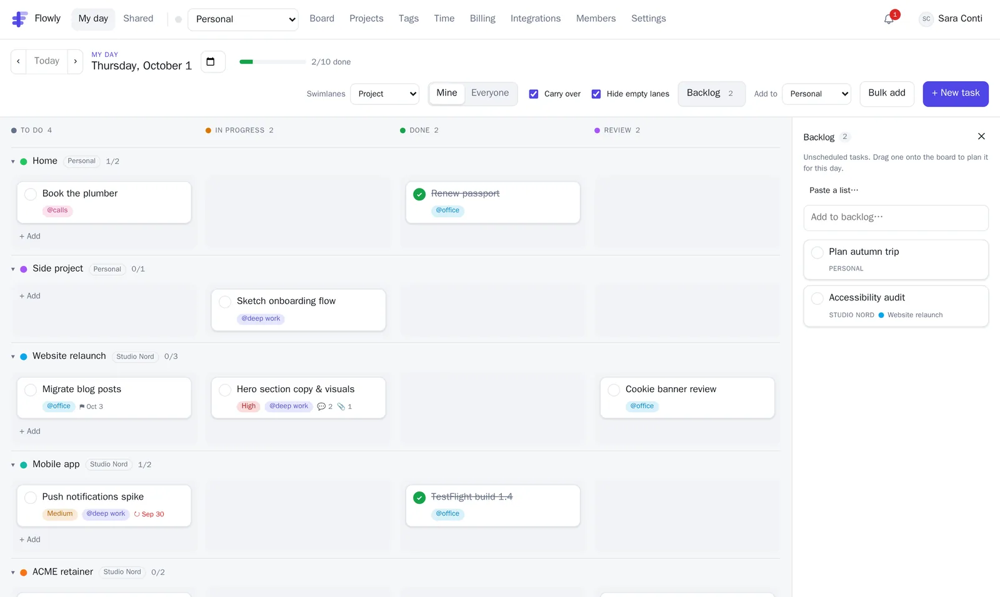
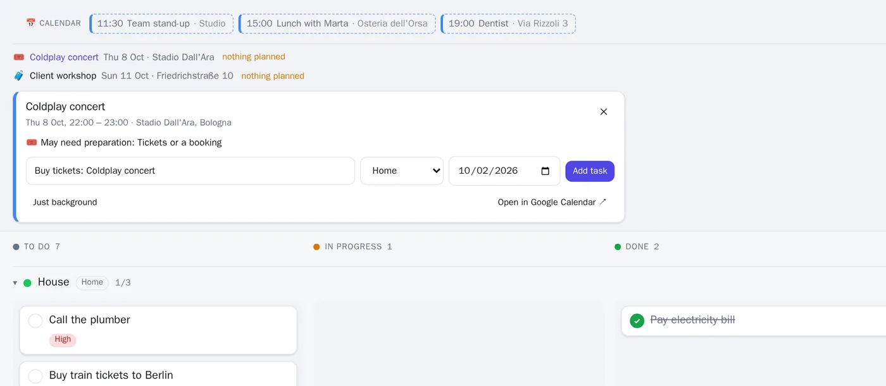
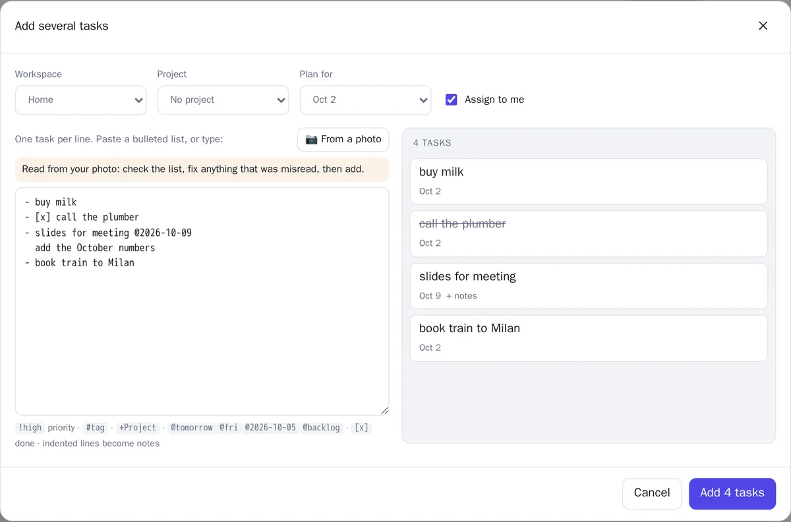
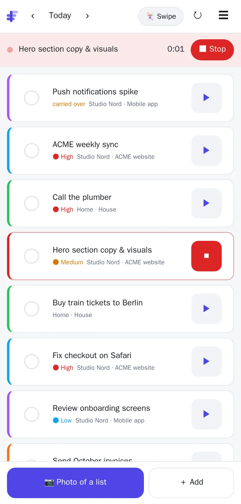
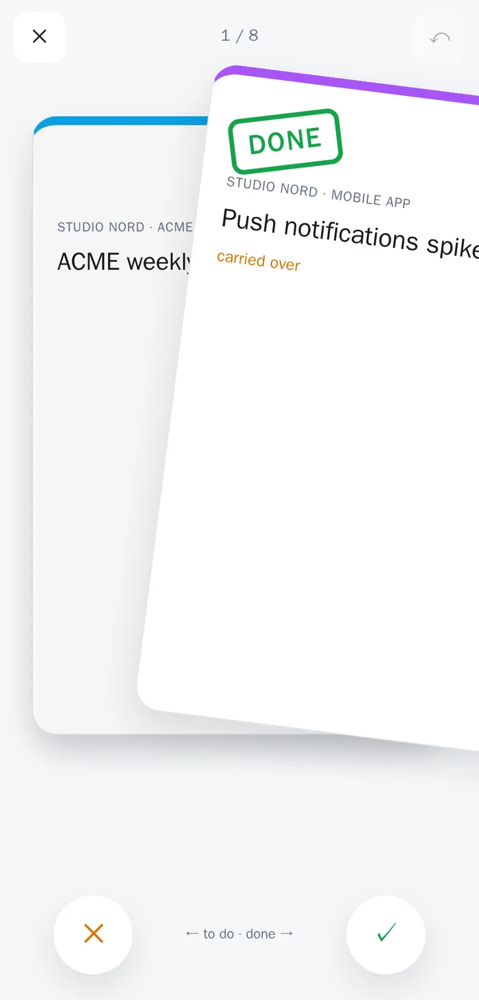
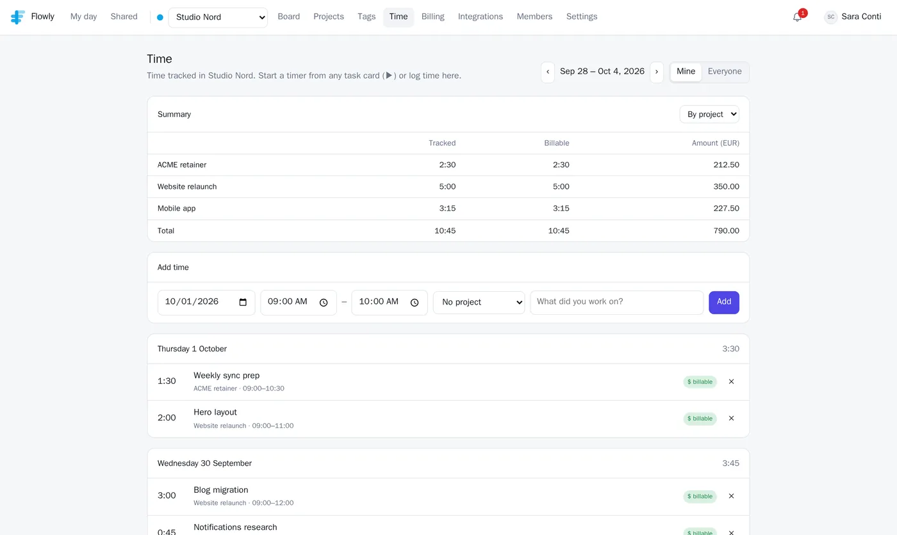

Swimlanes by anything
Group today's tasks by project, workspace, person, priority or your own tags, like @calls or @deep work. Drag a card to another lane and it moves there for real.
Daily planning for people with too many projects
Flowly gathers the tasks from all your projects and teams into one board for today, grouped into swimlanes by project, context or anything you tag. On your desk, on your phone, in your team chat. Tomorrow starts clean.

Not another list per project. One view of what matters today, from everywhere.
Group today's tasks by project, workspace, person, priority or your own tags, like @calls or @deep work. Drag a card to another lane and it moves there for real.
Work, side projects and home in separate workspaces, each with its own colour, people and rules. My day brings everything assigned to you together.
Photograph a handwritten list and AI turns it into tasks: crossed-out items done, notes kept, “fri” becomes Friday. Or paste a list with !high, #tag, +Project, @tomorrow.
Google Calendar events sit above the board without becoming tasks. Flowly flags the few that need preparation (tickets, travel, a trip away from home) so nothing sneaks up on you.
Columns and priorities are tags you define: add Review or Waiting, reorder them, choose what counts as done. Unfinished work carries over.
Every task has a thread and its documents (uploads, links, Google Drive, OneDrive / SharePoint) and its own link: private, team, shared with people, or public read-only.


On the phone, Flowly keeps only what you need on the go.
Android app and desktop tray timer available now; on iPhone, add Flowly to your home screen while the App Store version is on its way.


Bring your assistant to your tasks, or let Flowly's come to you.
Connect a whole workspace or just one project.
team@in.flowly.net-style aliases and it becomes a task./flowly.
1:30, 45m, 2h.Start free. Upgrade when the AI and the invoices start paying for themselves.
€0
€6/month
or €60/year (two months free), plus VAT where it applies
€10/month
or €100/year, plus VAT where it applies
Custom
per workspace, invoiced yearly or monthly
The web app works everywhere. These add a timer in your tray and your day on your phone.
All downloads (including .deb, .rpm and checksums) and first-run tips: app.flowly.net/apps · latest release
Create an account, add your projects, and drag today into shape.
Start for free